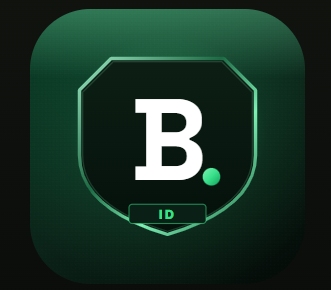

Baller.IDLAST UPDATED 10 AUGUST 2026
Baller.ID is an app for people who play turf football. You use it to organise matches, log what happened, and build a player card from real games. By creating an account you agree to these terms.
You must be 13 or older. You need one account, in your own name, with a real photo of yourself if you add one. Do not pretend to be someone else.
We do not allow objectionable content or abusive behaviour, and there is no tolerance for it. Accounts that break this rule are removed.
You must not post, send, or upload:
This applies to everything you can type or upload: your display name, your @handle, your profile photo, match names, and venue names.
Every player card has a Report or block option. Reporting sends it to us. Blocking means that person cannot see you and you cannot see them, and they are not told about it.
We review every report within 24 hours. Depending on what we find we may remove the content, warn the account, or remove the account permanently. You can also write to us at support@ballerid.in.
Your card is built from real matches. Do not enter goals, assists, or saves that did not happen. Stats need several players from the same match to submit before they count, and a stat found to be false is removed and affects your trust score. Repeatedly faking stats can get your account removed.
What you upload stays yours. You give us permission to store and display it inside the app so the product works — your photo on your card, your name on a leaderboard, your stats in a match. We do not sell it. See the Privacy Policy for what we store and why.
You can delete your account from the app at any time: open the menu and choose Delete Account. We may suspend or remove an account that breaks these terms, without notice where the behaviour is serious.
Baller.ID is provided as is. We do not guarantee it will always be available or error free. Matches happen in the real world: we do not organise them, we are not responsible for what happens at a venue, and we are not responsible for disputes between players, injuries, payments, or bookings.
We may update these terms. If we make a significant change we will say so in the app. Continuing to use Baller.ID after a change means you accept the new terms.
Questions, reports, or anything else: support@ballerid.in.
← Back to Baller.ID